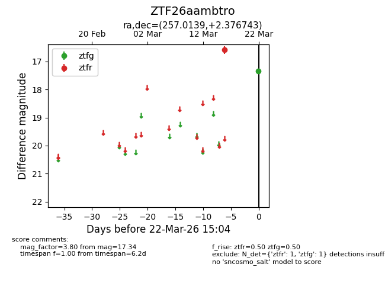
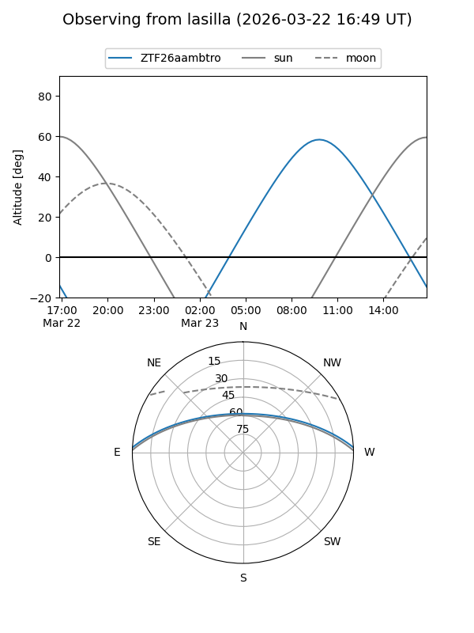
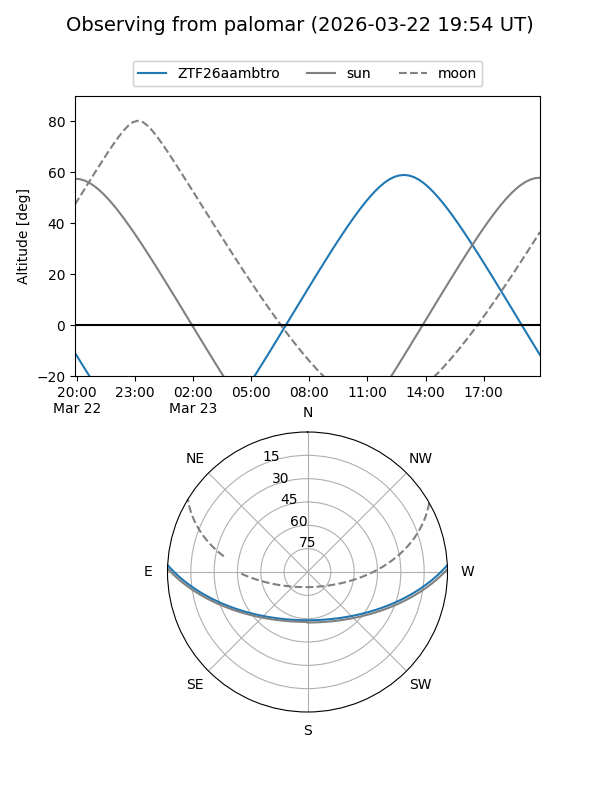

ZTF26aambtro
Target ZTF26aambtro at 2026-03-22 15:06
Aliases and brokers:
FINK: link
Lasair: link
ALeRCE: link
alt names
ZTF26aambtro (ztf,fink_ztf)
Coordinates:
equatorial (ra, dec) = 257.0139,+2.37674
equatorial (HMS+DMS) = 17:08:03.34,+02:22:36.27
galactic (l, b) = (22.7372,+23.98912)
Flags:
Photometry:
last ztfg=17.34, ztfr=16.59
1 ztfg, 1 ztfr detections
Lightcurve

Visibility


Additional plots